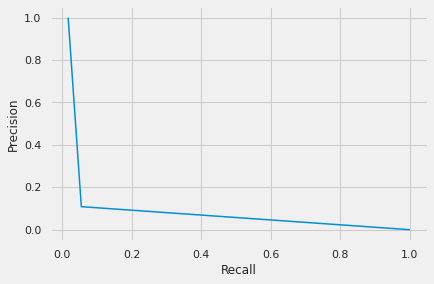
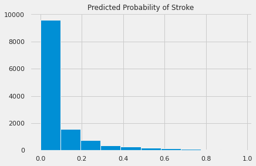
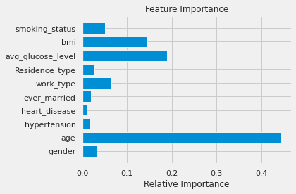
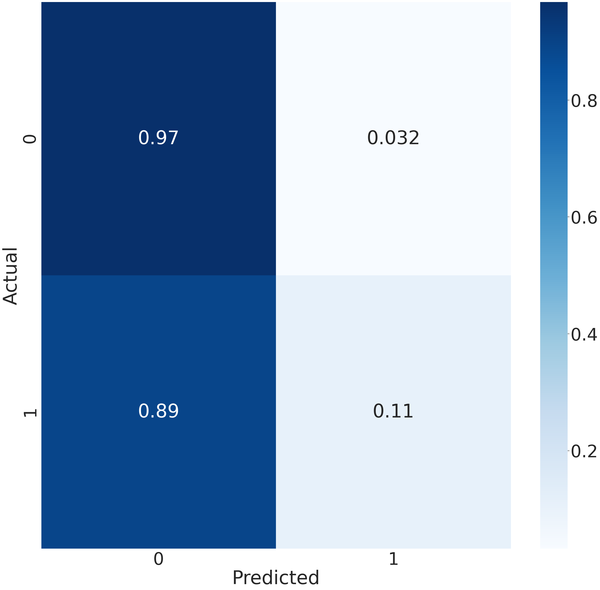
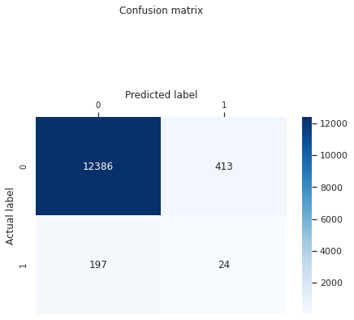
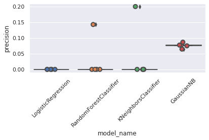

import sys
import os
from scipy import stats
from datetime import datetime, date
import pandas as pd
import numpy as np
from sklearn.ensemble import RandomForestClassifier
from sklearn.ensemble import VotingClassifier
from sklearn.linear_model import LogisticRegression
from sklearn.svm import SVC
from sklearn.linear_model import LinearRegression
from sklearn.model_selection import train_test_split
import matplotlib.pyplot as plt
import seaborn as sns
import statsmodels.api as sm
from sklearn import datasets, linear_model
from sklearn.metrics import mean_squared_error, r2_score
from sklearn import metrics
from sklearn.model_selection import cross_val_score
from sklearn.model_selection import train_test_split, cross_val_score, cross_val_predict
from sklearn.ensemble import RandomForestClassifier, VotingClassifier, GradientBoostingClassifier
from sklearn.linear_model import LogisticRegression
from sklearn.svm import SVC, LinearSVC
from sklearn.neighbors import KNeighborsClassifier
from sklearn.pipeline import make_pipeline
import xgboost as xgb
%matplotlib inline
plt.style.use("fivethirtyeight")
sns.set_context("notebook")
from imblearn.under_sampling import RandomUnderSampler
from imblearn.over_sampling import SMOTE- This notebook uses SMOTE and cross-validation.
from sklearn.linear_model import LogisticRegression
from sklearn.model_selection import train_test_split
from sklearn import preprocessingImport DF
url = 'https://raw.githubusercontent.com/davidrkearney/colab-notebooks/main/datasets/strokes_training.csv'
df = pd.read_csv(url, error_bad_lines=False)
df.info()<class 'pandas.core.frame.DataFrame'>
RangeIndex: 43400 entries, 0 to 43399
Data columns (total 12 columns):
# Column Non-Null Count Dtype
--- ------ -------------- -----
0 id 43400 non-null int64
1 gender 43400 non-null object
2 age 43400 non-null float64
3 hypertension 43400 non-null int64
4 heart_disease 43400 non-null int64
5 ever_married 43400 non-null object
6 work_type 43400 non-null object
7 Residence_type 43400 non-null object
8 avg_glucose_level 43400 non-null float64
9 bmi 41938 non-null float64
10 smoking_status 30108 non-null object
11 stroke 43400 non-null int64
dtypes: float64(3), int64(4), object(5)
memory usage: 4.0+ MBData Prep
df = df.drop(columns = ['id'])# Label Encoding
for f in df.columns:
if df[f].dtype=='object':
lbl = preprocessing.LabelEncoder()
lbl.fit(list(df[f].values))
df[f] = lbl.transform(list(df[f].values))pct_list = []
for col in df.columns:
pct_missing = np.mean(df[col].isnull())
if round(pct_missing*100) >0:
pct_list.append([col, round(pct_missing*100)])
print('{} - {}%'.format(col, round(pct_missing*100)))gender - 0%
age - 0%
hypertension - 0%
heart_disease - 0%
ever_married - 0%
work_type - 0%
Residence_type - 0%
avg_glucose_level - 0%
bmi - 3%
smoking_status - 0%
stroke - 0%df = df.fillna(df.mean())df=df.dropna()
df.info()<class 'pandas.core.frame.DataFrame'>
Int64Index: 43400 entries, 0 to 43399
Data columns (total 11 columns):
# Column Non-Null Count Dtype
--- ------ -------------- -----
0 gender 43400 non-null int64
1 age 43400 non-null float64
2 hypertension 43400 non-null int64
3 heart_disease 43400 non-null int64
4 ever_married 43400 non-null int64
5 work_type 43400 non-null int64
6 Residence_type 43400 non-null int64
7 avg_glucose_level 43400 non-null float64
8 bmi 43400 non-null float64
9 smoking_status 43400 non-null int64
10 stroke 43400 non-null int64
dtypes: float64(3), int64(8)
memory usage: 4.0 MBRandom Forest Classifier
Feature and Target Selection
# Select feature and target variables:
X = df.drop(['stroke'], axis=1)
y = df[['stroke']]#One-hot encode the data using pandas get_dummies
X = pd.get_dummies(X)#rus = RandomUnderSampler(random_state=0, replacement=True)
#X_resampled, y_resampled = rus.fit_resample(X, y)
#print(np.vstack(np.unique([tuple(row) for row in X_resampled], axis=0)).shape)X_train, X_test, y_train, y_test = train_test_split(X, y, test_size=0.3, random_state=0)
columns = X_train.columns
sm = SMOTE(random_state=1)
X_train_SMOTE, y_train_SMOTE = sm.fit_sample(X_train, y_train)from sklearn.ensemble import RandomForestClassifier
from sklearn import metrics
model = RandomForestClassifier(n_estimators=100, bootstrap=True,
max_features='sqrt', n_jobs=3, verbose=1, class_weight="balanced")
model.fit(X_train_SMOTE, y_train_SMOTE)
y_pred = model.predict(X_test)DataConversionWarning: A column-vector y was passed when a 1d array was expected. Please change the shape of y to (n_samples,), for example using ravel().
model.fit(X_train_SMOTE, y_train_SMOTE)
[Parallel(n_jobs=3)]: Using backend ThreadingBackend with 3 concurrent workers.
[Parallel(n_jobs=3)]: Done 44 tasks | elapsed: 0.9s
[Parallel(n_jobs=3)]: Done 100 out of 100 | elapsed: 2.0s finished
[Parallel(n_jobs=3)]: Using backend ThreadingBackend with 3 concurrent workers.
[Parallel(n_jobs=3)]: Done 44 tasks | elapsed: 0.0s
[Parallel(n_jobs=3)]: Done 100 out of 100 | elapsed: 0.1s finishedfrom sklearn.metrics import roc_auc_score
# Calculate roc auc
roc_value = roc_auc_score(y_test, y_pred)
roc_value0.5381645695594856print("Accuracy:",metrics.accuracy_score(y_test, y_pred))
print("Precision:",metrics.precision_score(y_test, y_pred))
print("Recall:",metrics.recall_score(y_test, y_pred))Accuracy: 0.9531490015360983
Precision: 0.05491990846681922
Recall: 0.1085972850678733y_pred_proba = model.predict_proba(X_test)[::,1]
fpr, tpr, _ = metrics.roc_curve(y_test, y_pred_proba)
auc = metrics.roc_auc_score(y_test, y_pred_proba)
plt.plot(fpr,tpr,label="data 1, auc="+str(auc))
plt.legend(loc=4)
plt.show()[Parallel(n_jobs=3)]: Using backend ThreadingBackend with 3 concurrent workers.
[Parallel(n_jobs=3)]: Done 44 tasks | elapsed: 0.1s
[Parallel(n_jobs=3)]: Done 100 out of 100 | elapsed: 0.2s finished
from sklearn.metrics import precision_recall_curve
import matplotlib.pyplot as plt
from inspect import signature
precision, recall, _ = precision_recall_curve(y_test, y_pred)
plt.plot(precision,recall)
plt.xlabel('Recall')
plt.ylabel('Precision')Text(0, 0.5, 'Precision')
# Import numpy and matplotlib
import numpy as np
import matplotlib.pyplot as plt
# Construct the histogram with a flattened 3d array and a range of bins
plt.hist(y_pred_proba.ravel())
# Add a title to the plot
plt.title('Predicted Probability of Stroke')
# Show the plot
plt.show()
len(y_pred_proba)13020y_predarray([1, 0, 0, ..., 0, 0, 1])# Get feature importances for interpretability
# Get numerical feature importances
importances = list(model.feature_importances_)
# List of tuples with variable and importance
feature_importances = [(feature, round(importance, 2)) for feature, importance in zip(X, importances)]
# Sort the feature importances by most important first
feature_importances = sorted(feature_importances, key = lambda x: x[1], reverse = True)
# Print out the features and importances
[print('Variable: {:20} Importance: {}'.format(*pair)) for pair in feature_importances];Variable: age Importance: 0.44
Variable: avg_glucose_level Importance: 0.19
Variable: bmi Importance: 0.15
Variable: work_type Importance: 0.06
Variable: smoking_status Importance: 0.05
Variable: gender Importance: 0.03
Variable: Residence_type Importance: 0.03
Variable: hypertension Importance: 0.02
Variable: ever_married Importance: 0.02
Variable: heart_disease Importance: 0.01plt.figure(1)
plt.title('Feature Importance')
x_values = list(range(len(importances)))
plt.barh(x_values, importances, align='center')
plt.yticks(x_values, X)
plt.xlabel('Relative Importance')
plt.tight_layout() 
import pandas as pd
feature_importances = pd.DataFrame(model.feature_importances_,
index = X_train.columns,
columns=['importance']).sort_values('importance', ascending=False)importances[0.030891482100094805,
0.4448331026265109,
0.017695413344245573,
0.009520184938617332,
0.01937533663501595,
0.06499114062861666,
0.026702090192497516,
0.18974364950033454,
0.14563102038830425,
0.050616579645762515]Confusion Matrix
from sklearn.metrics import confusion_matrix
cnf_matrix = metrics.confusion_matrix(y_test, y_pred)
cnf_matrixarray([[12386, 413],
[ 197, 24]])sns.set(font_scale=5.0)
conf_mat = confusion_matrix(y_test, y_pred)
cm_normalized = conf_mat.astype('float') / conf_mat.sum(axis=1)[:, np.newaxis]
fig, ax = plt.subplots(figsize=(30,30), dpi = 100)
sns.heatmap(cm_normalized, annot=True, cmap="Blues")
sns.set(font_scale=1)
plt.ylabel('Actual')
plt.xlabel('Predicted')
#fig.savefig('cm_augmented.png', dpi=fig.dpi, transparent=True)
plt.show()
cm_normalizedarray([[0.96773185, 0.03226815],
[0.89140271, 0.10859729]])fig, ax = plt.subplots()
# create heatmap
sns.heatmap(pd.DataFrame(cnf_matrix), annot=True, cmap="Blues" ,fmt='g')
ax.xaxis.set_label_position("top")
plt.tight_layout()
plt.title('Confusion matrix', y=1.5)
plt.ylabel('Actual label')
plt.xlabel('Predicted label')
plt.tick_params(axis='both', which='major', labelsize=10, labelbottom = False, bottom=False, top = True, labeltop=True)
from sklearn.ensemble import RandomForestClassifier
from sklearn import metrics
model = RandomForestClassifier(n_estimators=100, bootstrap=True,
max_features='sqrt', n_jobs=3, verbose=1, class_weight="balanced")
model.fit(X_train, y_train)
y_pred = model.predict(X_test)DataConversionWarning: A column-vector y was passed when a 1d array was expected. Please change the shape of y to (n_samples,), for example using ravel().
model.fit(X_train, y_train)
[Parallel(n_jobs=3)]: Using backend ThreadingBackend with 3 concurrent workers.
[Parallel(n_jobs=3)]: Done 44 tasks | elapsed: 0.3s
[Parallel(n_jobs=3)]: Done 100 out of 100 | elapsed: 0.6s finished
[Parallel(n_jobs=3)]: Using backend ThreadingBackend with 3 concurrent workers.
[Parallel(n_jobs=3)]: Done 44 tasks | elapsed: 0.0s
[Parallel(n_jobs=3)]: Done 100 out of 100 | elapsed: 0.1s finishedfrom sklearn.ensemble import RandomForestClassifier
from sklearn import metrics
model = RandomForestClassifier(n_estimators=100, bootstrap=True,
max_features='sqrt', n_jobs=3, verbose=1, class_weight="balanced")
model.fit(X_train_SMOTE, y_train_SMOTE)
y_pred = model.predict(X_test)DataConversionWarning: A column-vector y was passed when a 1d array was expected. Please change the shape of y to (n_samples,), for example using ravel().
model.fit(X_train_SMOTE, y_train_SMOTE)
[Parallel(n_jobs=3)]: Using backend ThreadingBackend with 3 concurrent workers.
[Parallel(n_jobs=3)]: Done 44 tasks | elapsed: 0.8s
[Parallel(n_jobs=3)]: Done 100 out of 100 | elapsed: 1.9s finished
[Parallel(n_jobs=3)]: Using backend ThreadingBackend with 3 concurrent workers.
[Parallel(n_jobs=3)]: Done 44 tasks | elapsed: 0.0s
[Parallel(n_jobs=3)]: Done 100 out of 100 | elapsed: 0.1s finishedprint("Accuracy:",metrics.accuracy_score(y_test, y_pred))
print("Precision:",metrics.precision_score(y_test, y_pred))
print("Recall:",metrics.recall_score(y_test, y_pred))Accuracy: 0.9541474654377881
Precision: 0.05660377358490566
Recall: 0.1085972850678733y_pred = model.predict_proba(X_test)[:,1]
train_proba = pd.DataFrame({'predicted_probability': y_pred})
train_proba.info()[Parallel(n_jobs=3)]: Using backend ThreadingBackend with 3 concurrent workers.
[Parallel(n_jobs=3)]: Done 44 tasks | elapsed: 0.1s
[Parallel(n_jobs=3)]: Done 100 out of 100 | elapsed: 0.2s finished<class 'pandas.core.frame.DataFrame'>
RangeIndex: 13020 entries, 0 to 13019
Data columns (total 1 columns):
# Column Non-Null Count Dtype
--- ------ -------------- -----
0 predicted_probability 13020 non-null float64
dtypes: float64(1)
memory usage: 101.8 KB##check whether y_train indexes are the same as X_train indexes
same_index = y_test.index == X_test.index
same_index.all()True## get them into the same pandas frame
table = pd.concat([y_test.reset_index(drop=True), train_proba.reset_index(drop=True)], axis=1)
table| stroke | predicted_probability | |
|---|---|---|
| 0 | 0 | 0.63 |
| 1 | 0 | 0.25 |
| 2 | 0 | 0.00 |
| 3 | 0 | 0.00 |
| 4 | 0 | 0.00 |
| ... | ... | ... |
| 13015 | 0 | 0.00 |
| 13016 | 0 | 0.00 |
| 13017 | 0 | 0.00 |
| 13018 | 0 | 0.00 |
| 13019 | 1 | 0.70 |
13020 rows 2 columns
table.stroke.value_counts()0 12799
1 221
Name: stroke, dtype: int64table.info()<class 'pandas.core.frame.DataFrame'>
RangeIndex: 13020 entries, 0 to 13019
Data columns (total 2 columns):
# Column Non-Null Count Dtype
--- ------ -------------- -----
0 stroke 13020 non-null int64
1 predicted_probability 13020 non-null float64
dtypes: float64(1), int64(1)
memory usage: 203.6 KBtable.to_csv('../processed_csvs/healthcare_table.csv')Cross-Validation Precision
from sklearn.ensemble import RandomForestClassifier
forest_clf = RandomForestClassifier(n_estimators=100, random_state=42)#cross validation predictions for test set
y_test_pred = cross_val_predict(forest_clf, X_test, y_test, cv=5)
print("Accuracy:",metrics.accuracy_score(y_test, y_test_pred))
print("Precision:",metrics.precision_score(y_test, y_test_pred))
print("Recall:",metrics.recall_score(y_test, y_test_pred))/home/david/anaconda3/lib/python3.8/site-packages/sklearn/model_selection/_validation.py:862: DataConversionWarning: A column-vector y was passed when a 1d array was expected. Please change the shape of y to (n_samples,), for example using ravel().
estimator.fit(X_train, y_train, **fit_params)
/home/david/anaconda3/lib/python3.8/site-packages/sklearn/model_selection/_validation.py:862: DataConversionWarning: A column-vector y was passed when a 1d array was expected. Please change the shape of y to (n_samples,), for example using ravel().
estimator.fit(X_train, y_train, **fit_params)
/home/david/anaconda3/lib/python3.8/site-packages/sklearn/model_selection/_validation.py:862: DataConversionWarning: A column-vector y was passed when a 1d array was expected. Please change the shape of y to (n_samples,), for example using ravel().
estimator.fit(X_train, y_train, **fit_params)
/home/david/anaconda3/lib/python3.8/site-packages/sklearn/model_selection/_validation.py:862: DataConversionWarning: A column-vector y was passed when a 1d array was expected. Please change the shape of y to (n_samples,), for example using ravel().
estimator.fit(X_train, y_train, **fit_params)
/home/david/anaconda3/lib/python3.8/site-packages/sklearn/model_selection/_validation.py:862: DataConversionWarning: A column-vector y was passed when a 1d array was expected. Please change the shape of y to (n_samples,), for example using ravel().
estimator.fit(X_train, y_train, **fit_params)Accuracy: 0.9827188940092166
Precision: 0.0
Recall: 0.0#cross validation predictions for full dataset
y_pred = cross_val_predict(forest_clf, X, y, cv=5)/home/david/anaconda3/lib/python3.8/site-packages/sklearn/model_selection/_validation.py:862: DataConversionWarning: A column-vector y was passed when a 1d array was expected. Please change the shape of y to (n_samples,), for example using ravel().
estimator.fit(X_train, y_train, **fit_params)
/home/david/anaconda3/lib/python3.8/site-packages/sklearn/model_selection/_validation.py:862: DataConversionWarning: A column-vector y was passed when a 1d array was expected. Please change the shape of y to (n_samples,), for example using ravel().
estimator.fit(X_train, y_train, **fit_params)
/home/david/anaconda3/lib/python3.8/site-packages/sklearn/model_selection/_validation.py:862: DataConversionWarning: A column-vector y was passed when a 1d array was expected. Please change the shape of y to (n_samples,), for example using ravel().
estimator.fit(X_train, y_train, **fit_params)
/home/david/anaconda3/lib/python3.8/site-packages/sklearn/model_selection/_validation.py:862: DataConversionWarning: A column-vector y was passed when a 1d array was expected. Please change the shape of y to (n_samples,), for example using ravel().
estimator.fit(X_train, y_train, **fit_params)
/home/david/anaconda3/lib/python3.8/site-packages/sklearn/model_selection/_validation.py:862: DataConversionWarning: A column-vector y was passed when a 1d array was expected. Please change the shape of y to (n_samples,), for example using ravel().
estimator.fit(X_train, y_train, **fit_params)print("Accuracy:",metrics.accuracy_score(y, y_pred))
print("Precision:",metrics.precision_score(y, y_pred))
print("Recall:",metrics.recall_score(y, y_pred))Accuracy: 0.9817741935483871
Precision: 0.0
Recall: 0.0test_proba = pd.DataFrame({'predicted_probability': y_pred})
test_proba.info()<class 'pandas.core.frame.DataFrame'>
RangeIndex: 43400 entries, 0 to 43399
Data columns (total 1 columns):
# Column Non-Null Count Dtype
--- ------ -------------- -----
0 predicted_probability 43400 non-null int64
dtypes: int64(1)
memory usage: 339.2 KB##check whether y_test indexes are the same as X_test indexes
same_index = y.index == X.index
same_index.all()True## get them into the same pandas frame
table = pd.concat([y.reset_index(drop=True), test_proba.reset_index(drop=True)], axis=1)
table| stroke | predicted_probability | |
|---|---|---|
| 0 | 0 | 0 |
| 1 | 0 | 0 |
| 2 | 0 | 0 |
| 3 | 0 | 0 |
| 4 | 0 | 0 |
| ... | ... | ... |
| 43395 | 0 | 0 |
| 43396 | 0 | 0 |
| 43397 | 0 | 0 |
| 43398 | 0 | 0 |
| 43399 | 0 | 0 |
43400 rows 2 columns
table.stroke.value_counts()0 42617
1 783
Name: stroke, dtype: int64table.to_csv('../processed_csvs/final_model_table.csv')5-Fold Cross Validation
from sklearn.ensemble import RandomForestClassifier
from sklearn.ensemble import VotingClassifier
from sklearn.linear_model import LogisticRegression
from sklearn.neighbors import KNeighborsClassifier
from sklearn.svm import SVC
from sklearn.naive_bayes import GaussianNB
from sklearn.metrics import accuracy_score
from sklearn.metrics import precision_score
from sklearn.model_selection import cross_val_score
models = [
LogisticRegression(solver="liblinear", random_state=42),
RandomForestClassifier(n_estimators=10, random_state=42),
KNeighborsClassifier(n_neighbors = 5, metric = 'minkowski', p = 2),
GaussianNB(),
]
CV = 5
cv_df = pd.DataFrame(index=range(CV * len(models)))
entries = []
for model in models:
model_name = model.__class__.__name__
accuracies = cross_val_score(model, X, y, scoring='precision', cv=CV)
for fold_idx, accuracy in enumerate(accuracies):
entries.append((model_name, fold_idx, accuracy))
cv_df = pd.DataFrame(entries, columns=['model_name', 'fold_idx', 'precision'])
sns.boxplot(x='model_name', y='precision', data=cv_df)
sns.stripplot(x='model_name', y='precision', data=cv_df,
size=8, jitter=True, edgecolor="gray", linewidth=2)
plt.xticks(rotation=45)
plt.tight_layout()
plt.show()/home/david/anaconda3/lib/python3.8/site-packages/sklearn/utils/validation.py:72: DataConversionWarning: A column-vector y was passed when a 1d array was expected. Please change the shape of y to (n_samples, ), for example using ravel().
return f(**kwargs)
/home/david/anaconda3/lib/python3.8/site-packages/sklearn/metrics/_classification.py:1221: UndefinedMetricWarning: Precision is ill-defined and being set to 0.0 due to no predicted samples. Use `zero_division` parameter to control this behavior.
_warn_prf(average, modifier, msg_start, len(result))
/home/david/anaconda3/lib/python3.8/site-packages/sklearn/utils/validation.py:72: DataConversionWarning: A column-vector y was passed when a 1d array was expected. Please change the shape of y to (n_samples, ), for example using ravel().
return f(**kwargs)
/home/david/anaconda3/lib/python3.8/site-packages/sklearn/metrics/_classification.py:1221: UndefinedMetricWarning: Precision is ill-defined and being set to 0.0 due to no predicted samples. Use `zero_division` parameter to control this behavior.
_warn_prf(average, modifier, msg_start, len(result))
/home/david/anaconda3/lib/python3.8/site-packages/sklearn/utils/validation.py:72: DataConversionWarning: A column-vector y was passed when a 1d array was expected. Please change the shape of y to (n_samples, ), for example using ravel().
return f(**kwargs)
/home/david/anaconda3/lib/python3.8/site-packages/sklearn/metrics/_classification.py:1221: UndefinedMetricWarning: Precision is ill-defined and being set to 0.0 due to no predicted samples. Use `zero_division` parameter to control this behavior.
_warn_prf(average, modifier, msg_start, len(result))
/home/david/anaconda3/lib/python3.8/site-packages/sklearn/utils/validation.py:72: DataConversionWarning: A column-vector y was passed when a 1d array was expected. Please change the shape of y to (n_samples, ), for example using ravel().
return f(**kwargs)
/home/david/anaconda3/lib/python3.8/site-packages/sklearn/metrics/_classification.py:1221: UndefinedMetricWarning: Precision is ill-defined and being set to 0.0 due to no predicted samples. Use `zero_division` parameter to control this behavior.
_warn_prf(average, modifier, msg_start, len(result))
/home/david/anaconda3/lib/python3.8/site-packages/sklearn/utils/validation.py:72: DataConversionWarning: A column-vector y was passed when a 1d array was expected. Please change the shape of y to (n_samples, ), for example using ravel().
return f(**kwargs)
/home/david/anaconda3/lib/python3.8/site-packages/sklearn/metrics/_classification.py:1221: UndefinedMetricWarning: Precision is ill-defined and being set to 0.0 due to no predicted samples. Use `zero_division` parameter to control this behavior.
_warn_prf(average, modifier, msg_start, len(result))
/home/david/anaconda3/lib/python3.8/site-packages/sklearn/model_selection/_validation.py:531: DataConversionWarning: A column-vector y was passed when a 1d array was expected. Please change the shape of y to (n_samples,), for example using ravel().
estimator.fit(X_train, y_train, **fit_params)
/home/david/anaconda3/lib/python3.8/site-packages/sklearn/model_selection/_validation.py:531: DataConversionWarning: A column-vector y was passed when a 1d array was expected. Please change the shape of y to (n_samples,), for example using ravel().
estimator.fit(X_train, y_train, **fit_params)
/home/david/anaconda3/lib/python3.8/site-packages/sklearn/metrics/_classification.py:1221: UndefinedMetricWarning: Precision is ill-defined and being set to 0.0 due to no predicted samples. Use `zero_division` parameter to control this behavior.
_warn_prf(average, modifier, msg_start, len(result))
/home/david/anaconda3/lib/python3.8/site-packages/sklearn/model_selection/_validation.py:531: DataConversionWarning: A column-vector y was passed when a 1d array was expected. Please change the shape of y to (n_samples,), for example using ravel().
estimator.fit(X_train, y_train, **fit_params)
/home/david/anaconda3/lib/python3.8/site-packages/sklearn/model_selection/_validation.py:531: DataConversionWarning: A column-vector y was passed when a 1d array was expected. Please change the shape of y to (n_samples,), for example using ravel().
estimator.fit(X_train, y_train, **fit_params)
/home/david/anaconda3/lib/python3.8/site-packages/sklearn/model_selection/_validation.py:531: DataConversionWarning: A column-vector y was passed when a 1d array was expected. Please change the shape of y to (n_samples,), for example using ravel().
estimator.fit(X_train, y_train, **fit_params)
/home/david/anaconda3/lib/python3.8/site-packages/sklearn/model_selection/_validation.py:531: DataConversionWarning: A column-vector y was passed when a 1d array was expected. Please change the shape of y to (n_samples, ), for example using ravel().
estimator.fit(X_train, y_train, **fit_params)
/home/david/anaconda3/lib/python3.8/site-packages/sklearn/model_selection/_validation.py:531: DataConversionWarning: A column-vector y was passed when a 1d array was expected. Please change the shape of y to (n_samples, ), for example using ravel().
estimator.fit(X_train, y_train, **fit_params)
/home/david/anaconda3/lib/python3.8/site-packages/sklearn/model_selection/_validation.py:531: DataConversionWarning: A column-vector y was passed when a 1d array was expected. Please change the shape of y to (n_samples, ), for example using ravel().
estimator.fit(X_train, y_train, **fit_params)
/home/david/anaconda3/lib/python3.8/site-packages/sklearn/model_selection/_validation.py:531: DataConversionWarning: A column-vector y was passed when a 1d array was expected. Please change the shape of y to (n_samples, ), for example using ravel().
estimator.fit(X_train, y_train, **fit_params)
/home/david/anaconda3/lib/python3.8/site-packages/sklearn/model_selection/_validation.py:531: DataConversionWarning: A column-vector y was passed when a 1d array was expected. Please change the shape of y to (n_samples, ), for example using ravel().
estimator.fit(X_train, y_train, **fit_params)
/home/david/anaconda3/lib/python3.8/site-packages/sklearn/utils/validation.py:72: DataConversionWarning: A column-vector y was passed when a 1d array was expected. Please change the shape of y to (n_samples, ), for example using ravel().
return f(**kwargs)
/home/david/anaconda3/lib/python3.8/site-packages/sklearn/utils/validation.py:72: DataConversionWarning: A column-vector y was passed when a 1d array was expected. Please change the shape of y to (n_samples, ), for example using ravel().
return f(**kwargs)
/home/david/anaconda3/lib/python3.8/site-packages/sklearn/utils/validation.py:72: DataConversionWarning: A column-vector y was passed when a 1d array was expected. Please change the shape of y to (n_samples, ), for example using ravel().
return f(**kwargs)
/home/david/anaconda3/lib/python3.8/site-packages/sklearn/utils/validation.py:72: DataConversionWarning: A column-vector y was passed when a 1d array was expected. Please change the shape of y to (n_samples, ), for example using ravel().
return f(**kwargs)
/home/david/anaconda3/lib/python3.8/site-packages/sklearn/utils/validation.py:72: DataConversionWarning: A column-vector y was passed when a 1d array was expected. Please change the shape of y to (n_samples, ), for example using ravel().
return f(**kwargs)